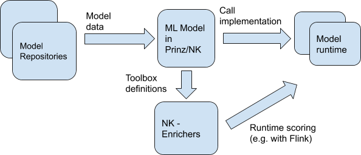

Internal model overview

We assume that an API that will enable relatively easy addition of further implementations of model repositories / runtime ML models will be created.
API implementation for a given ML system will consist of two parts:
- Retrieving data about models from the ML model registry
- Calling scoring on a given model -> i.e. calling runtime of a given model
In the first stage, the translation of a model from a registry (e.g. MLFlow) to a Prinz / NK model will probably be quite simple - a list of models, for each one of them a list of parameters with types, possibly additional metadata such as description, a link to the documentation. In later stages, other operations may be added (e.g. retrieving some data from external sources, etc.) - that is why it is probably worth establishing your own data model.
Examples of model repositories:
- MLFlow has its own solution that serves a REST API
- Repository described by a configuration file (fixed) - this may make sense when we have a few simple models that rarely change
Examples of model runtimes:
- Model issued as a REST API in a container - then the model configuration / repository should know the API reference, the implementation of this runtime is an HTTP client that calls the appropriate service
- PMML as a model description in the form of XML - model implementation in this runtime is XML + a library that allows its interpretation.
- Generated code (e.g. via H2O or other custom solutions) - then the runtime of this model is a wrapper for the generated code